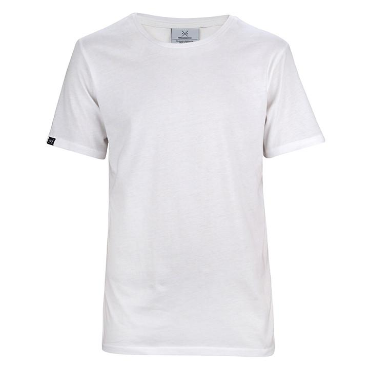

The Wild World of Shirts!
This website is all about shirts and different kinds of shirts, so if you aren't into shirts I would recomend clicking off before we dive into the wacky and wonderful world of shirts!
Now that all the shirt haters are gone heres a basic picture of a shirt.

This is a plain white shirt often used as an undershirt used to wear under dress shirts that are possibly see through
Button up
Graphic TeePolo